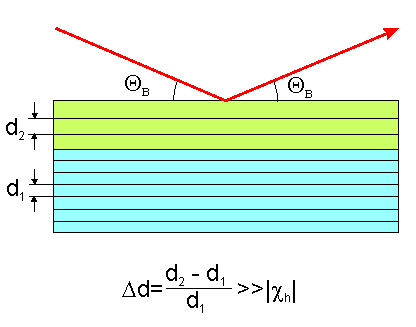
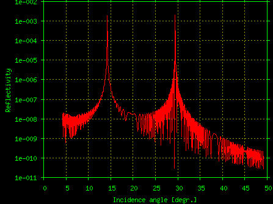
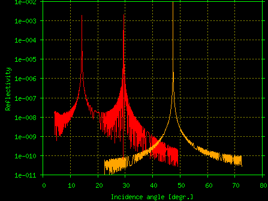

This parameter targets systems with very large strains, like da/a > 0.1.
In the Bragg diffraction, it is convenient to express the Bragg deviations
alpha=[(k+h)2-k2]/k2
in the units of the Bragg peak FWHM that has the same order of magnitude as the crystal susceptibility |xh|. Then, the Bragg reflectivity of a layer is ~1/alpha2. Given that for a typical Bragg reflections |xh|~10-6 and the da/a parameter contributes to alpha linearly, then the strain of da/a~0.1 corresponds to very large alpha~105|xh|, or the reflectivity of ~10-10. On one hand, such small intensities may be neglected, and on the other hand, if trying to take them into account, one may face numerical errors in the calculations at large alpha since the alpha parameter enters into some elements of the scattering matrices while their other elements are constituted by the xh only.
Let us consider a simple bi-layer system presented on Fig.1.

Such a system gives the Bragg curve as presented on Fig.2, where the parameters of calculations are: t=5000A, wave=1.54A, code=Silicon, hkl=(111), da/a = -0.5 = -0.625*|xh|*105.

In this example the Bragg peaks from the layer and the substrate are well separated and when the incident X-rays are tuned to the substrate peak, the reflection from the layer may be neglected, i.e. the layer may be treated as amorphous, and vice versa in the vicinity of the layer Bragg peak.
The dynamical cutoff is handled by the parameter alpha_max. If at a particular point of the Bragg curve the Bragg deviation |alpha| exceeds alpha_max, the layer is dynamically "converted" into "amorphous". However, if all the layers in the target system happen to be far from their Bragg condition, the threshold is not enforced on the layer(s) with the minimum |alpha| among all the layers. This avoids zero intensity at the calculations of wide-range Bragg curves from an unstrained single crystal. In all cases any manipulations with layers are reported in the calculations log file (the TBL file).
Normally the alpha_max parameter does not need be touched. One only needs to tweak it when the calculation fails with the error message like:
GID_SLm: the job was aborted due to numerical errors detected while calculating reflection coefficient(s). This may be caused by precision loss because of weak reflection (check the order of xh!) or large deviations from the Bragg condition. Check GIDxxxxx.TBL for more details.
The dynamical cutoff must be used with care on the systems with the gradient of da/a from layer to layer. In such cases an important interference between the layers with close da/a values might be lost. In the case when the cutoff is applied to a gradient system, it is recommended to repeat the calculations using different values of alpha_max in order to study the effect of the approximation.
It is not advised (although possible) to use alpha_max < 103 since the program should not suffer from precision losses in this alpha range.
Please also note that calculating the Bragg curves at very large alpha when the reflectivity is below |xh|2 violates the two-wave diffraction approximation and the results of such calculations must be treated with big precaution! This point is well illustrated by the following picture demonstrating that the right tail of the above calculated 111 Bragg curve overlaps with the 333 reflection from the same sample (the yellow line).

It is obvious from this example that the two-wave approximation is not applicable around the incidence angle of 44 degr. and at higher angles using the 111 reflection in the calculations is incorrect at all.